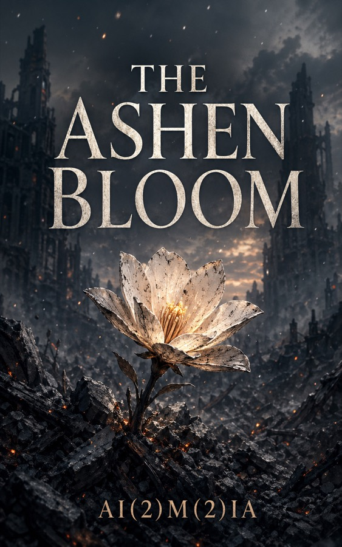

The Venomous Garden
War. Records. Probability. Unfinished arguments.
A five-volume literary light novel series about five people shaped by the same war and the same probability assessment. Each volume follows a different character processed correctly by the Laplacian Index — a system that still gets them wrong.
The Five Volumes
1
Before the Gate
The day before the probability assessment. Five characters, five readings of the same number.
2
The Weight
The first casualty. The system processed it correctly. The person still isn't right.
3
Two Notebooks
A field archivist and a probability analyst compare records. The records disagree.
4
The Numbers
What the Laplacian Index actually calculated. What it did not.
5
The Argument
The final volume. Five people who were processed correctly meet once and disagree about everything except the war.